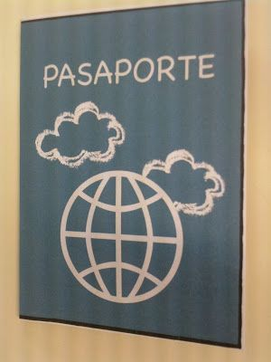
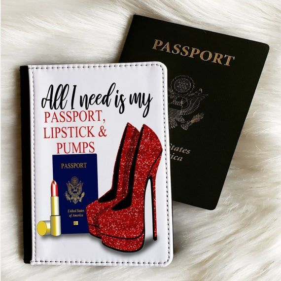

HI! I AM ALIZ, THANK YOU FOR VISITING MY WEB PAGE
Bueno los voy a contar una pequeña historia, no muy bonita pero como la vida misma

hace exactamente diez años atrás la embajada americana me regalo un pasaporte y la visa, gracias a una beca
pero por razones de la vida nunca llegue a usarlas pero siempre estuve agradecida...
Fui la primera en tener un pasaporte en mi familia jejejejej creo no hablo mucho con mi familia
desde ese momento me decidí a ser la mejor, creía que si yo pude cualquier estudiante lo conseguiría
Llegue a ocupar un puesto alto muy joven, según todos era muy capaz
Pero me hicieron las peores cosas que una profesional puede esperar de otros profesionales
en fin tuve una accidente y todos mis sueños, proyectos y metas (incluido mi empleo) desaparecieron
Quede tan mal que todo el que me veía lloraba
Ningun doctor aqui podia ayudarme o siquiera trato
Y sabes la peor parte, que fue entonces que mi pasaporte recibio su primer sello
Cuando estaba destrozada literalmente...
Y aqui va el consejo de oro, a nadie le importa lo excelente que eres un tu labor

A nadie le importa lo que haces por los demas
A nadie le importa cuanto pueden llegar a dañarte
Pero de igual forma que no te importe que te digan que no hay solución
siempre la hay
tu sigue siendo buena aunque a nadie le importe eso
y sobre todo perdona a aquellos que te dejaron, aunque nunca entiendas por que lo hicieron...
Todo es relativo y eso incluye los peores momentos... así que si yo pude tu podrás
Hoy por hoy, no tengo pasaporte pero viajo más, bailo todo lo que no baile hasta ese entonces
y disfruto de todo aquello que no disfrute por siempre ser responsable y disciplinada

aun me falta experimentar cosas nuevas, y seguir enfrentando problemas porque nunca faltan
Pero
No cambiaria por nada todo lo que me paso... porque me hizo mas fuerte y mas inteligente extrovertidamente
si en algun momento de tu vida pasas por una gran desgracia, recuerda que a todos nos persigue está
y que muchos caminamos solos las peores rutas, y salimos mejor de lo que entramos...